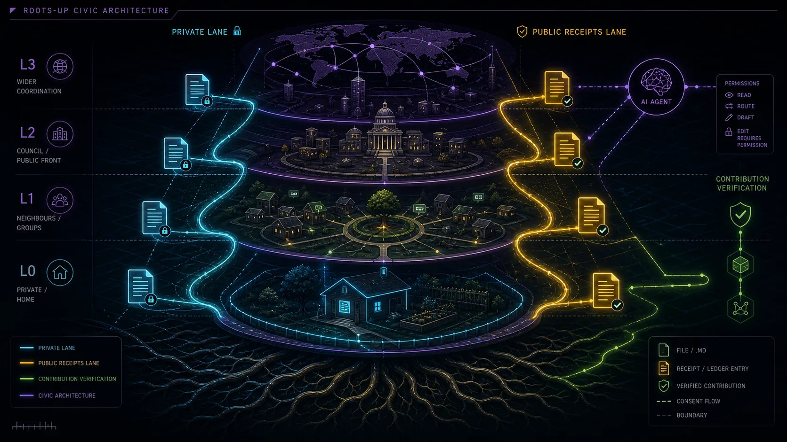

1. Write the private version
Start with the messy truth: phone numbers, names, worries, draft wording, questions, health needs, family details and planning notes. Keep this version for yourself or the small group that has permission to see it.
A Markdown file helps you tell an artificial intelligence tool what matters, who may see it, what needs checking, and what can be shared. The simple rule is this: people keep control of their own story, and public decisions leave a trail people can follow.

Start with the messy truth: phone numbers, names, worries, draft wording, questions, health needs, family details and planning notes. Keep this version for yourself or the small group that has permission to see it.
Turn the private notes into a clear working note: what is happening, who is helping, what needs doing, what is confirmed, what is still a question and what sources should be checked.
Share only what people need to know: the public message, date, place, source links, who checked it and how to correct a mistake. That version can work on Straddie, or anywhere in Australia that wants clearer public notes.
The technology matters less than the habit. A file is a note. A public notice is an approved message. A receipt is proof people can check later.
A plain text note with headings. The file ending is usually `.md`. It can be opened, copied and edited without special software.
A computer tool that can draft, sort, summarise or compare text. It gives better help when you give it the facts, boundaries and sources first.
A private note about needs, preferences, care, reminders, goals and boundaries. In this project family, one common starter file is called `aura.md`.
The short approved version of a person, group, place, event or project that can appear on a site, noticeboard, phone post, kiosk or game world.
A clear message people are allowed to see: what is happening, where, when, who checked it, and where to find the source.
A follow-up record that shows what was promised, what happened, what changed, what needs correction and what still needs work.
The lane tells the file who may read it, what the computer tool may use, and what needs a human review before anything goes public.
Use this for personal notes, health, home, family, care, identity, spiritual reflection, private contact details and unfinished thoughts.
Start a private profile fileUse this for a club, project team, care circle, grant group, family group or local working crew where people know the sharing rules.
See a small file shapeUse this for approved community notices, events, volunteer calls, safety updates, meeting reminders and public summaries.
Visit the Straddie noticeboardsUse this for public money, promises, donations, lobbying, conflicts, edits, procurement, decisions, outcomes and corrections.
Open public-accountability sourcesThese questions turn a big system into ordinary decisions. They help a person prepare a note before a computer tool starts drafting.
Name the real audience: neighbours, club members, carers, visitors, volunteers, council staff, young people, Elders or the general public.
Open the starter file builderWrite the exact information that helps the reader: dates, places, approved contact details, public roles, source links and a plain summary.
Read the privacy pageMark private phone numbers, health details, family matters, children's names, sensitive locations, private stories, cultural knowledge and unconfirmed claims for careful handling.
Use the quick checklistName the person, group or role that reviewed the note. Public posts work better when readers can see who approved the message.
See research sourcesAdd links, dates, file names, photos, meeting notes or public documents so readers can check the trail later.
Open the research libraryGive people a simple way to report an error, update a time, add a source or ask for a private detail to be handled differently.
Read the plain guideA group wants to organise a working bee, invite volunteers and share an update afterwards. One note keeps organiser phone numbers, health needs and planning details private. Another note helps the small team prepare the day. The public notice tells everyone what is happening, where to go and who approved the message. The follow-up record shows what was promised, what happened and what still needs attention.
That is the heart of the system. A Markdown note can begin as private context, become a working note for a trusted group, turn into an approved public notice, and finish as a public receipt. The artificial intelligence tool can help draft, shorten, translate, check sources and prepare versions for a wall screen or phone post. People keep the final say.
Needs, preferences, boundaries and care notes that help the person or organiser stay in control.
An approved short profile for a person, role, group, project or place before it appears in public.
The practical facts people need to understand a group, service, maker, venue, event or grant idea.
Plain public information with dates, source links, approval notes and corrections people can follow.
The wider ecosystem can grow from ordinary files. A private support note helps a person stay in control. A public profile becomes an approved doorway. A noticeboard becomes shared memory. A game-world action can support useful civic life. A public receipt gives people a record they can check later.
Write the support layer that helps the computer tool understand a person, group or project while private details stay in the right hands.
Choose the short, approved version that can appear on a site, kiosk, app or game world.
Turn local information into a clear public notice with source links, dates and review notes.
Let an approved public character or project join local challenges, learning worlds or public-good leaderboards with fair rules.
Record the promise, decision, money, source, correction and result so people can follow the trail.
Each project starts with a practical local need, writes it down clearly, protects private details, publishes what helps the public, and leaves a trail for the next person.
Starts from one table, question, song, useful hour or receipt. It shows how local action can become a public trace: what happened, what changed, what broke and what comes next.
Open the public action hubExplores whether Dunwich could host a practical place to make, fix, recycle and learn through small experiments, compact tools, material learning, forms and community links.
Open the maker-space labFrames a Dunwich / Goompi concept for sand sport, outdoor cinema, night markets, youth crews, older-local comfort and ferry-gateway information.
Open the Ballow Road hubUses plain-English forms to create prompt packets for image, video and world-building tools. A prompt packet is a careful note that tells a computer generator what scene to make, what to leave out and what privacy level applies.
Open the digital twin buildersHelps with grant legwork before the clock starts: project summaries, entity profiles, evidence, watchlists and reporting checklists that groups can reuse.
Open the grants labStart inside this site if you want to make a file today. Use the project links when you want to see the same pattern working across the wider open public project family.
Use these pages when you want to write, check, publish or protect a Markdown note.
These links leave this site and stay inside the open public project family. They are short paths after the fuller examples above.
Write the boundary first. Then the computer tool can help with the wording while people keep control of identity, consent, public notice and public accountability.